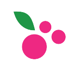

Amor: O coração, demonstrando o orgulho de ser da cidade e de produzir o "Calçado Infantil de Birigui".
Abraço: O abraço representa a união do povo biriguiense, sempre alegre, participativo, solidário e acolhedor, e a razão de ser do calçado de Birigui - o público infantil.
Esporte: Vocação do povo Biriguiense pelos esportes coletivos tais como o futebol, bem como pela prática de vôlei na piscina, que surgiu como recreação coletiva e alternativa à prática e aprendizagem de natação.
Parque do Povo: O Parque do Povo, por onde passa o córrego Biriguizinho, local de lazer e prática de esportes ao ar livre.

Cidade Pérola: A Concha Acústica e a Pérola que ficam no coração da cidade, na praça Dr. Gama.
Guaraná Paulistinha: Remete ao gostinho de infância é o refrigerante de guaraná, produzido na cidade desde os anos 60.
Fábricas: Simboliza a indústria calçadista infantil, que traduz a garra, a determinação e o empreendedorismo do povo biriguiense.
Laço: Demonstrando união entre os fabricantes, a diversidade na fabricação do calçado infantil, em numeração e modelos, desde 1958.
O colorido do desenho nos remete à alegria, vivacidade,
atitude e propósitos inerentes ao povo de Birigui, e ao mundo infantil,
com predominância da cor de fundo, bem valorizada pelas crianças, em várias fases
de sua infância, até a pré-adolescência.